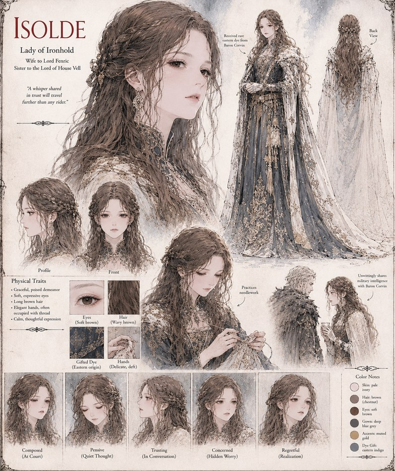

Isolde
Lady of Ironhold · wife to Fenric · sister to the Lord of House Vell
Lady of Ironhold, married to Fenric and sister to the Lord of House Vell — a connection that matters more to the war than she first realizes. A gift of rare eastern dye from Baron Corvin opens a friendly correspondence that, without her quite meaning it to, hands him military intelligence and leverage over her own family's relief force. She works out what's actually happening before the war ends, and has to decide, with House Vell's help hanging on it, what to do about him.
“A whisper shared in trust will travel further than any rider.”
Appears in The Iron Stiletto War